Rochester KLUG Keyboard Meetup
Tim Anderson
Created: 2019-07-11 Thu 16:23
Tim Anderson
Who am I?
So, what is this Dactyl Keyboard thing?
- And why should I care?

Parameterized, Split-Hand, Concave, Columnar, Ergonomic Keyboard
- Written in Clojure

History & Background
- https://www.youtube.com/watch?v=uk3A41U0iO4
- Started March 2015
- Made as an attempt at improving on the Kinesis Advantage2? @adereth
- Written in Clojure by using a wrapper arond OpenSCAD
Where is the Project Now?
- Last commit was in 2017
- Left in unfinished state & appears to be abandoned
- Documentation is left unfinished
- OpenSCAD functions don't stay consistant between versions or otherwise don't play nice with lisp wrapper.
- One of the most challenging DIY keyboard builds to take on
Why Tho?
- In short, because I can.
So, let's look at a regular keyboard
- Single board is cost effective & efficient, but can encourage unhealthy posture
- Offset rows are holdovers from typwriters
Good Habits Vs. Bad

Notable Mentions
Kinesis Advantage2

- Advantages: Widely considered one of the best commercially available ergo keyboards for poeple suffering from RSI
- Disadvanteges: $320.00 USD, some reviews describe feeling 'cheap'
- Open Source: No
ErgoDox (EZ)

- Advantages: Lots of support if building from scratch, also may be a better product than Advantage2
- Disadvantages: Also about $300 if purchased commercially (depending on the options)
- Open Source: Both commercially available & open source
Let's Split

- Advantages: Split-hand, simple, affordable design (~$100 USD)
- Disadvantages: Not concave
- Open Source: Yes
Atreus

- Advantages: Small, single-board form factor
- Disadvantages: Not a split design?
- Open Source: Yes
Signum 3 (Troy Fletcher)

- Advantages: Very simple design (solder on components, nothing else to worry about)
- Disadvantages: PCB is $80, no case for protection
- Open Source: Yes?
Other Dactyl Variations
Dactyl Ergodox

- Advantages: Reuse your Ergodox keycaps
- Disadvantages: Incomplete design
- Open Source: Yes
Lightcycle Dactyl

- Advantages: Slightly smaller footprint (fewer keys)
- Disadvantages: STL files for 3D printing appear to need more repair than basic model
- Open Source: Yes
Dactyl Manuform

- Advantages: Thumb clusters are brought down to a more natural position, Case is larger making wiring less tedious
- Disadvantages: Must be wired by hand, all of the challenges that come with original Dactyl
- Open Source: Yes
More Do-it-Yourself Options
There is a very nice list of other ergonomic keyboards, with pictures, on Xah Lee's website.
Reasons for Choosing Dactyl
- Open Source
- Looked like the most comfortable design
- Kinesis Advantage form factor, but DIY
- Looks hella cool
My Reasons for Building by Hand Instead of Purchasing
- At the time there were none being manufactured
- Sense of self-satisfaction
- I already own a 3D printer: screw paying someone else >$300, I'll just build my own!
One Year Later
Build Overview
Shell/Case
- The body of the keyboard is 3D printed by me
- There are 4 parts to print, each took 21 hours to complete on a RepRap style Cartesian 3D printer
- Material is PLA infused with wood fibers.
Hardware
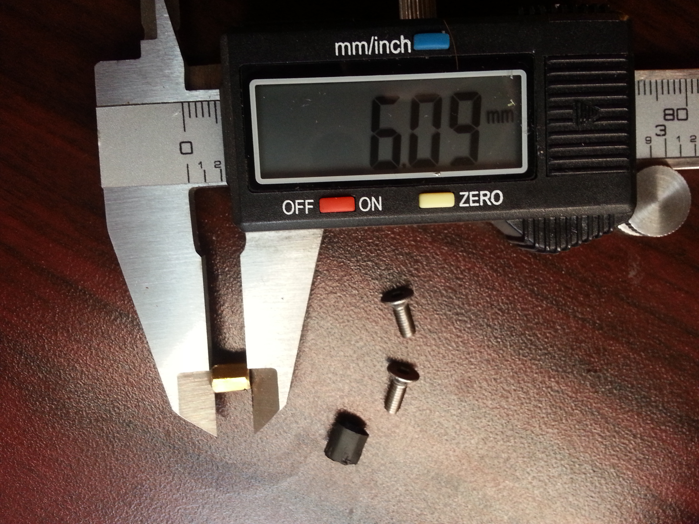
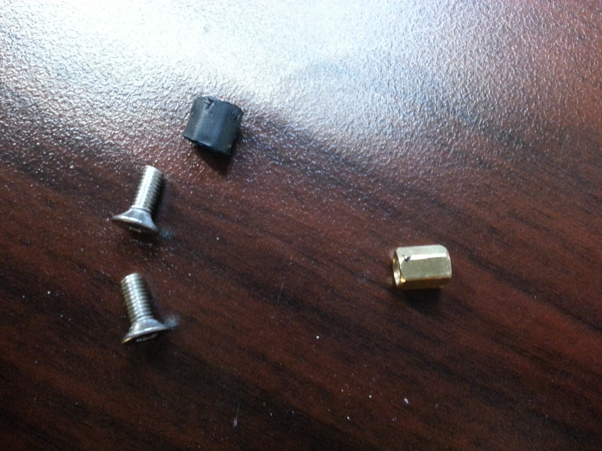
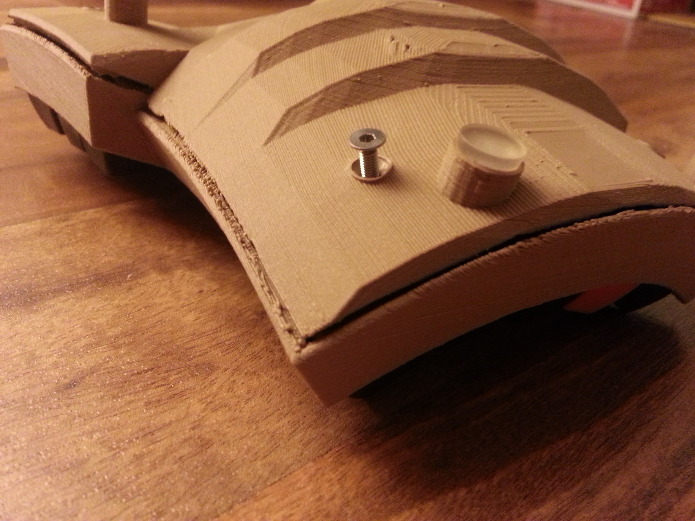
Switches
- Fits Cherry MX switches
Keycaps
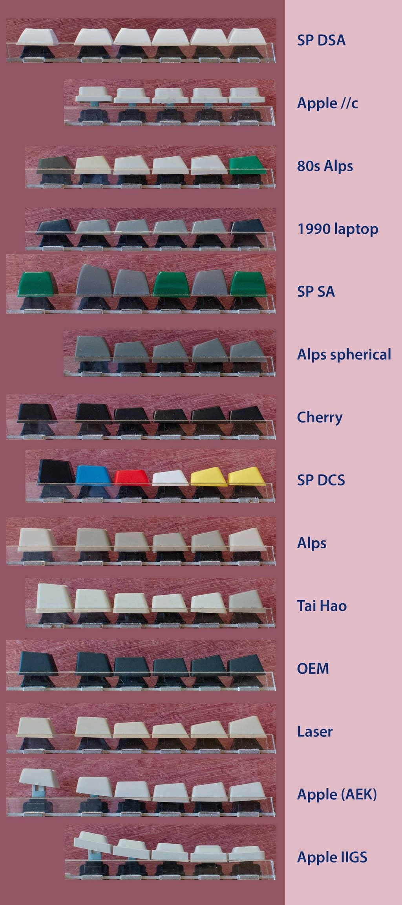
PCB Design
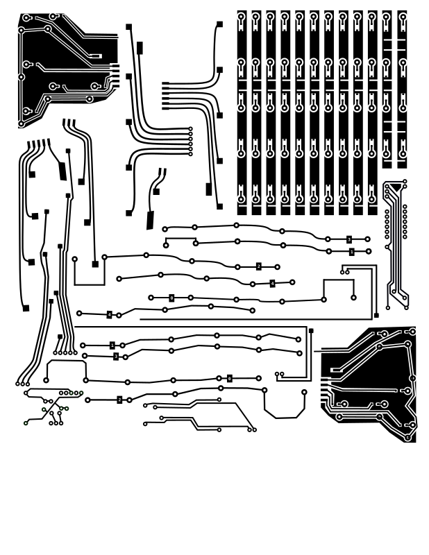
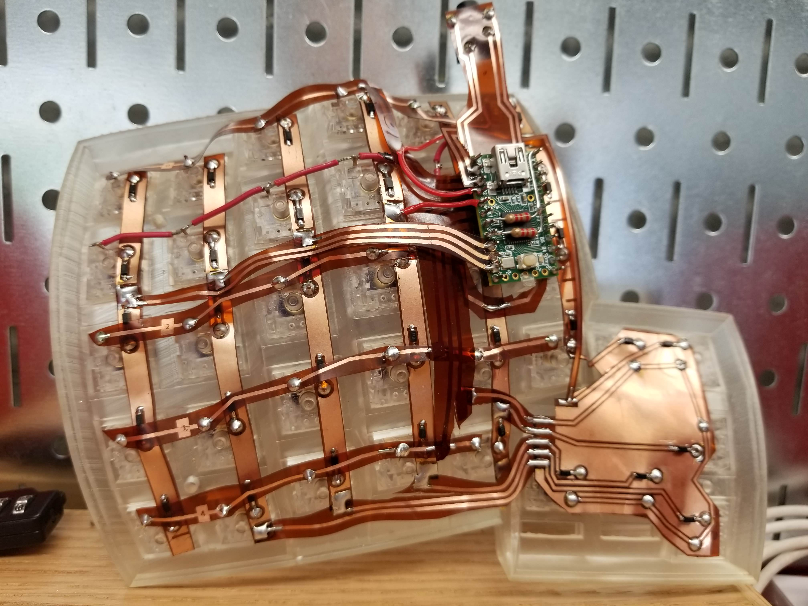
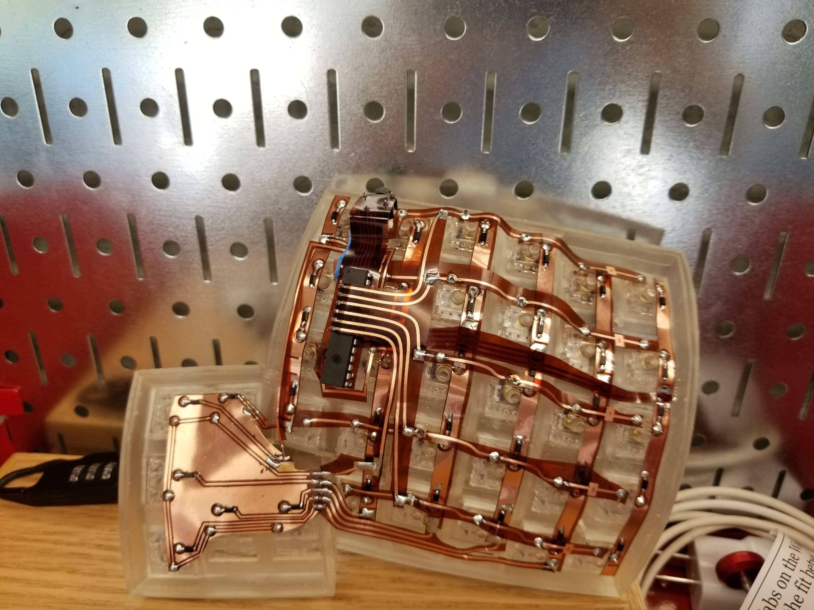
Xerox Printer
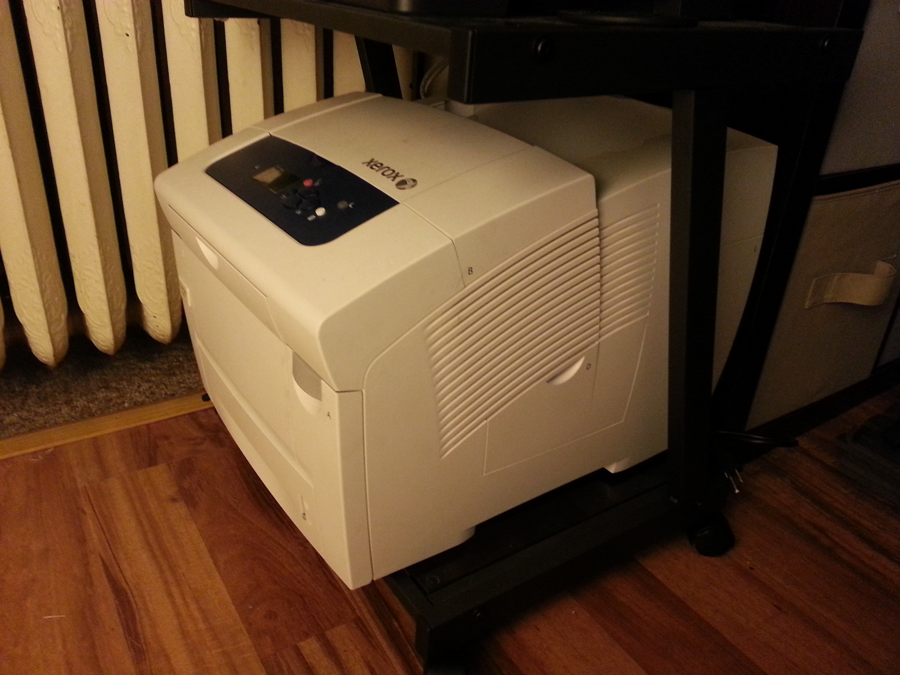
Preparing the Copper for the Design
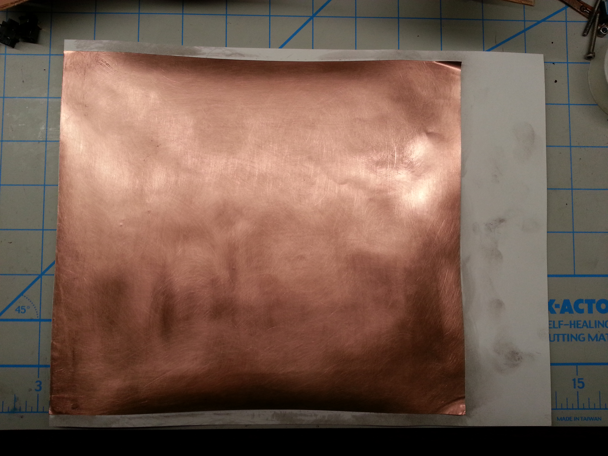
Final PCB Design
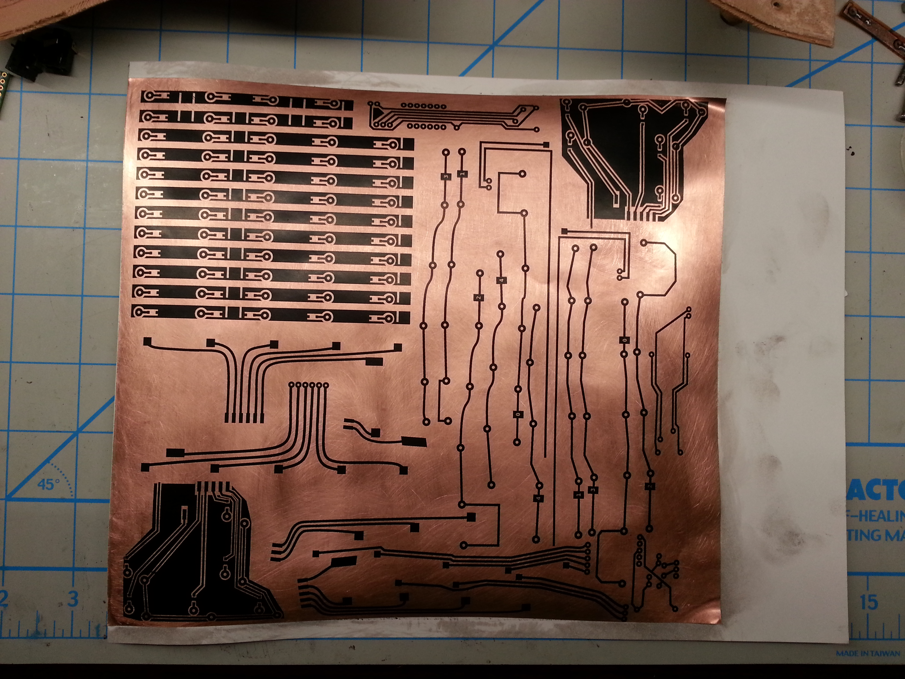
Etching
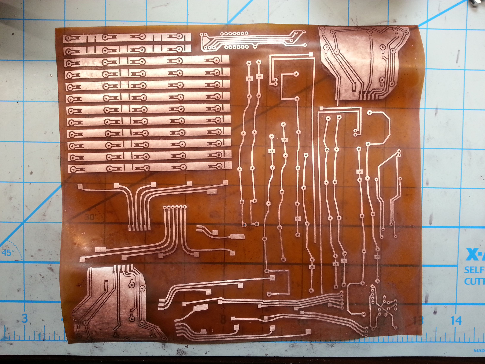
How Does it Work?

Notes on LEDs
- Use Ohm's Law to match reistors to curret rating on LEDs (Assume 5v)
- For LEDs under keycaps use T-1 LEDs
PSA: TRRS != TRS!

Firmware
Was It Worth It?
| Parts: | Cost in USD: |
|---|---|
| 1/3 1kg Spool PLA Fil for Shells | 10.00 |
| 70ct Key Switches | 53.00 |
| Rubber O-Rings for Switches | 2.00 |
| Designer Key Caps | 80.00 |
| Pyralux (Flexible copper for PCB) | 30.00 |
| Electrical Components/MCU | 65.00 |
| Total | 240. |
Resources
Crowd sourced, limited manufacturing.
Working with members of the reddit mechanical keyboard community to commercialize different Dactyl variations.
Seems to be the primary vendor for the Let's Split PCBs
I have no affiliation or experience with the above. YMMV!
Tutorials
Hardware & Accessories Vendors
- Digikey.com - Electrical components
- Sparkfun.com - Hobby-grade electrical components
- McMaster-Carr - Hardware supplier (price-compare Ebay first)
- KBDFans.com - Lots of keyboard components, ships from China
- AliExpress.com - China's Amazon.com, lots of hardware including keyboard supplies
- PimpMyKeyboard.com - Another keyboard component vendor